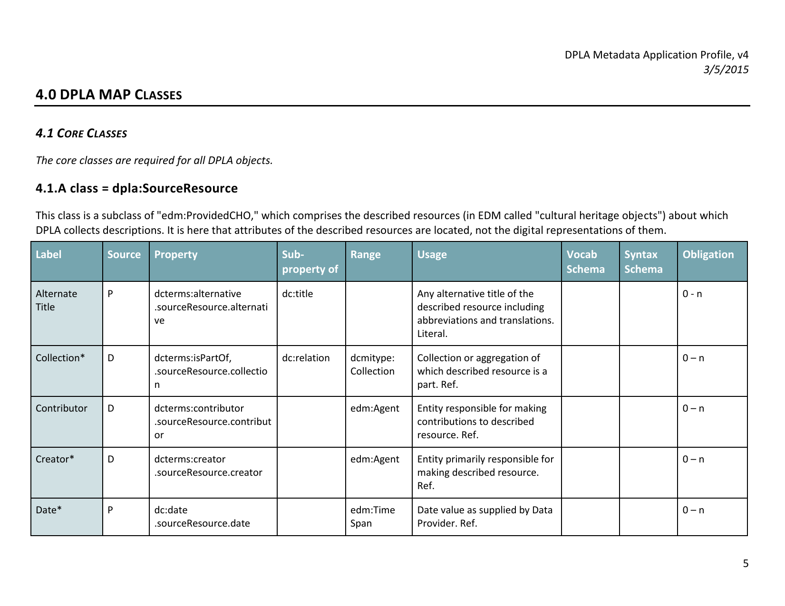

Best Practices der
Datendokumentation
Session beim DINI-KIM-Workshop 2017
Adrian Pohl /
@acka47
Linked
Open Data, Hochschulbibliothekszentrum NRW (hbz)

Mannheim, 2017-05-04
Diese Präsentation:
http://slides.lobid.org/kim-ws-2017/

Etherpad
http://etherpad.lobid.org/p/kim-ws-2017-dokumentation
Jede.r ist herzlich eingeladen,
zu dokumentieren, anzumerken, zu ergänzen, weiterzudiskutieren.
Worum geht es?
Dokumentation, die
elektronisch, z. B. online, oder gedruckt vorliegende Materialzusammenstellung, die als Gebrauchsanleitung für ein Gerät, ein technisches System, eine Software o. Ä. dient
Quelle: Duden
Hier: Dokumentation von (Meta-)Daten im Web
Dokumentation, die
elektronisch, z. B. online,oder gedrucktvorliegende Materialzusammenstellung, die als Gebrauchsanleitung für ein Gerät, ein technisches System, eine Software o. Ä. dient
Dokumentation, die
elektronisch, z. B. online,oder gedrucktvorliegende Materialzusammenstellung, die als Gebrauchsanleitung fürein Gerät, ein technisches System, eine Software o. Ä.(Meta-)Daten dient
Konkret: Dokumentation von Metadatenschemata
Metadatenschemata als eigenständiges Angebot
vs.
Metadatenschemata manifestiert in einem Dataset
Beispiele
Ontologien/RDFS-Vokabulare

Ontologien/RDFS-Vokabulare

Application Profiles

Application Profiles

Datasets

Datasets

API-Responses

API-Responses


Quelle: Andromeda Yelton's SWIB16 Keynote; Foto: Welcome by alborzshawn (CC-BY)
Perspektiven auf Dokumentation
Produzent: Dokumentation erstellen & pflegen
Konsument: Dokumentation nutzen
Perspektiven auf Dokumentation
Produzent: Dokumentation erstellen & pflegen
Dokumentation nutzen
Ziele der Session
Ins Gespräch kommen
Beispiele guter (und schlechter) Dokumentation sammeln
Ablauf
| Hinführung | Plenum | 15 min. |
| Sammlung von Beispielen, Best & Worst Practices | Gruppen | 25 min. |
| Gemeinsame Betrachtung von Beispielen | Plenum | 10 min. |
| Vorstellung lobid-Dokumentation | Plenum | 15 min. |
| Diskussion / Ausblick | Plenum | 20 min. |
Gruppenarbeit
Sammlung von Beispielen, Best & Worst Practices
Findet euch in Gruppen von 2 bis fünf Personen.
Fragen
(Antworten bitte hier hin: https://goo.gl/6kGh0U)
Mit welchen Vokabularen, Datasets etc. habt ihr in letzter Zeit gearbeitet? (5 min.)
Sucht euch Angebote aus, deren Dokumentation ihr hier näher betrachten wollt.
(Maximal ein Angebot pro Gruppenmitglied)
Dokumentation, die
elektronisch, z. B. online,oder gedrucktvorliegende Materialzusammenstellung, die als Gebrauchsanleitung fürein Gerät, ein technisches System, eine Software o. Ä.(Meta-)Daten dient
Dokumentation unterstützt den Gebrauch/die Nutzung eines Angebots
D. h. die Qualität einer Dokumentation muss immer im Hinblick auf einen bestimmten Anwendungsfall bewertet werden.
Zu welchem Zweck habt ihr euch das Angebot angeschaut? (3 min.)
Bsp.: Allgemeine Evaluierung der Datenqualität, Einbindung in eigene Service, Datenanreicherung
Welche Formen der Dokumentation stehen zur Verfügung? (5 min.)
Bsp.: tabellarische Übersicht, FAQ, Tutorial, Slides
Welche Dinge gefallen euch? (5 min.)
Wodurch wird die Umsetzung eures Anwendungsfalls gefördert?
Was stört? (5 min.)
Was behindert/verzögert die Umsetzung eures Anwendungsfalls?
Beispiele: Best & Worst Practice
Wer möchte Erkenntnisse teilen?
lobid-Dokumentation

Siehe auch "Documenting the lobid API" im lobid-Blog
lobid
Linked-Data-basierte Dateninfrastruktur
Rechercheoberflächen für Endanwender &
Web-APIs (read only) für Anwendungsentwickler
Daten aus verschiedenen Quellen, transformiert mit Metafacture


Was dokumentieren?
Dataset
API, inklusive Response-Format
RDF-Properties und -Klassen
Provenienz
Wie dokumentieren?
Dataset-Beschreibung

Und der Rest?
Dröge, ohne Kontext:
Ich brauche Beispiele!
Aber:
Beispiele sind oft nur Anhängsel von Dokumentation, wenn überhaupt gegeben.
"Deskriptiver Ansatz" ist vorherrschend.
Das Beispiel ins Zentrum der Dokumentation stellen!
Warum nicht strukturierte Informationen (Name, Beschreibung, URI etc.) direkt an Beispiele hängen?
Heutzutage kein Problem mit Web-Annotations-Tools wie hypothes.is
Annotierte Informationen
Name
Beschreibung
Abdeckung
Verwendungsbeispiele
Provenienz
URI
Vorteile
Kontextualisierung der Dokumentation
Beispiel ist aktuell, weil Annotation von Live-Daten
Rückmeldungen/Fragen von Nutzern via hypothes.is
Macht mehr Spaß?!
Ist intuitiver?!
Erleichtert das Verständnis?!